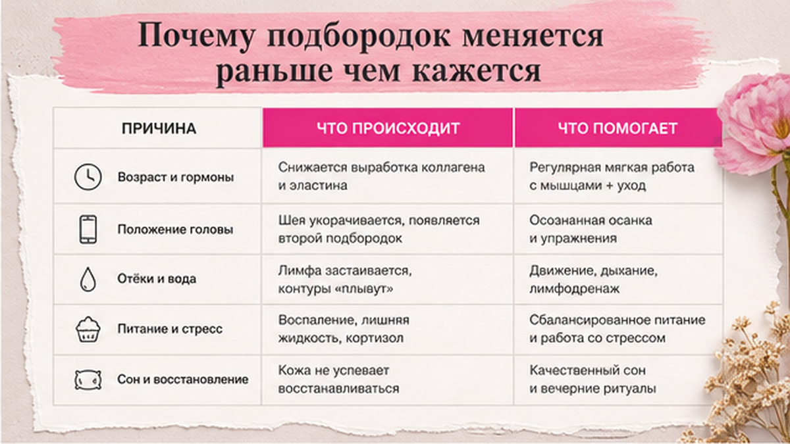
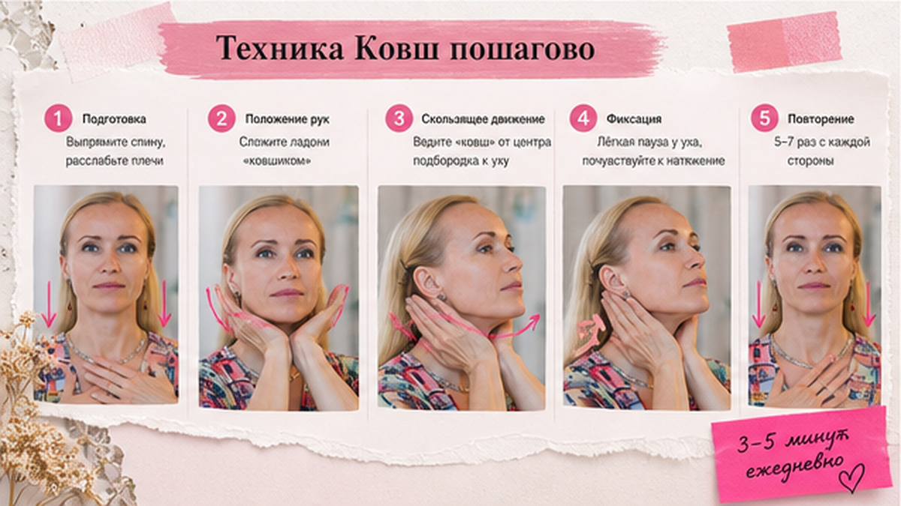
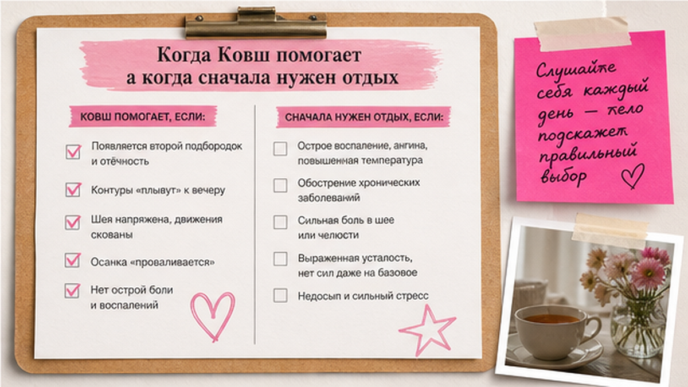

Упражнения для подбородка и шеи мягко включают мышцы нижней трети лица и помогают собрать овал, если проблема в слабом тонусе, а не в хроническом спазме челюсти. Делайте 5-7 повторов медленно, без зажимов зубов. Первые изменения в лучшую сторону обычно заметны через 2-3 недели регулярности, не за три дня.
Мне 53.
И я давно перестала верить в волшебные упражнения, которые обещают идеальный подбородок за неделю.
Но одну технику для овала я использую годами.
Не потому что у неё модное название в интернете.
А потому что она попадает в задачу, которую реально ищут: упражнения для подбородка, когда контур нижней трети стал мягче, а мышцы перестали держать форму.
Если у вас другое состояние - например, постоянно сжатые зубы и тяжелая челюсть - силовые движения для овала могут не помочь.
Или даже усилить напряжение.
Сейчас покажу, как я делаю это сама и как понять, подходит ли вам эта техника.

Большинство женщин замечают «плывущий» овал уже тогда, когда процесс идёт давно.
Сначала меняется не кожа.
Меняется положение головы.
Появляется напряжение в шее.
Замедляется лимфоток.
Утром лицо отекает чуть сильнее, к вечеру контур будто «стекает» вниз.
И только потом мы ищем упражнения для подбородка.
Хотя причина часто начиналась выше - в осанке, в привычке сутулиться над телефоном, в зажатой челюсти.
Хотя нет… наверное, точнее будет сказать так: подбородок редко «падает» сам по себе. Его тянет вниз целая цепочка - от стоп до макушки.
Смотри.
Когда плечи подняты, голова уезжает вперёд.
Лимфа - это внутренняя система, которая помогает тканям избавляться от лишней жидкости.
Когда она застаивается, подбородок выглядит тяжелее, даже если вес не изменился.
Платизма - широкая мышца на передней поверхности шеи.
Когда она напряжена и короткая, овал визуально «опускается».
Я часто вижу одну и ту же картину.
Женщина делает силовые упражнения для лица каждый день.
А подбородок не меняется.
Потому что мышцы и так не отдыхают.
Им не нужна ещё одна нагрузка.
Им нужен другой порядок действий.
Если вы уже проходили через это, в материале про фейсбилдинг и фейс-йогу я подробно объясняла, почему одно и то же упражнение у разных женщин даёт противоположный результат.

Это не гримаса и не «качка» челюсти.
Мягкое включение мышц зоны под подбородком - часть упражнений для подбородка и шеи, которые я даю дома.
Делайте перед зеркалом первые 3-4 раза, потом можно по памяти.
Сейчас станет понятнее, если пройдёте всё медленно - без спешки.
Шаг 1. Сядьте или встаньте ровно. Плечи опущены. Шея длинная, но без вытягивания «гусиной».
Шаг 2. Губы слегка приоткройте. Расслабьте верхнюю челюсть. Зубы не сжимайте.
Шаг 3. Нижней губой накройте нижние зубы так, будто черпаете ложкой. Получится характерная форма - в фейс-йоге это движение иногда называют «Ковш», я оставлю название один раз здесь, дальше - просто техника для овала.
Шаг 4. Мягко опустите нижнюю челюсть вниз и чуть вперёд. Движение короткое. Без рывка.
Шаг 5. Задержитесь на 2-3 секунды. Под пальцами должно появиться лёгкое напряжение под подбородком, не боль.
Шаг 6. Медленно вернитесь в исходное положение. Выдохните.
Шаг 7. Повторите 5-7 раз. Не больше за один подход.
После каждого повтора спросите себя: не сжались ли плечи, не задержалось ли дыхание, не появилась ли головная боль.
Если да - следующий повтор делайте ещё мягче или остановитесь на сегодня.
Между повторами - одно спокойное дыхание.
Если чувствуете боль в суставе челюсти, головокружение или звон в ушах - остановитесь.
Это сигнал, что техника пока не ваша.
На сухой коже шеи и подбородка можно нанести каплю крема для скольжения пальцев при самопроверке - так проще почувствовать, где включается мышца, а где вы просто давите на кожу.

Я не начинаю с силовых движений для овала, если вижу у ученицы зажатую челюсть и след от зубов на языке.
Сначала - расслабление.
Потом - мягкая работа с овалом.
Ниже - простой ориентир, который я использую на консультациях.
| Что вы замечаете | С чего начать | Техника для овала |
|---|---|---|
| Контур мягкий, зубы не сжаты, отёков мало | Упражнение 5-7 повторов через день | Да, подходит |
| Утренний отёк, лицо «тяжелеет» к вечеру | Лёгкий лимфоприём + осанка | Через 5-7 дней мягко добавить |
| Постоянно сжатые зубы, напряжённый лоб | Расслабление жевательных | Пока нет |
| Горизонтальные линии на шее, «кольца» | Работа с платизмой (материал про шею) | После 1-2 недель шеи |
| Голова постоянно впереди плеч | Осанка, экран на уровне глаз | Только вместе с шеей |
Именно этот порядок чаще всего даёт изменения в лучшую сторону - без ощущения, что лицо «надрывается» от упражнений.
Давай покажу на примере.
Одна моя ученица пришла с запросом «убрать второй подбородок» - про связь с диетой и языком есть отдельный материал.
Мы не начали с упражнений для овала.
Сначала три дня - только дыхание и расслабление челюсти.
На четвёртый день добавили технику для подбородка - пять повторов.
Через две недели она написала: «Профиль не идеальный, но лицо стало легче, и я перестала просыпаться с болью в висках».
Вот так это обычно и работает.
Если не уверены, с чего начать именно вам, пройдите короткую диагностику кожи - сухая стянутая кожа и напряжённое лицо часто идут в паре, и уход тоже влияет на то, как держится овал.
Техника простая.
Ошибки - тоже простые.
И очень типичные.
Именно этот момент обычно упускают: делают движение через силу, как упражнение в зале.
Лицо так не любит.
| Ошибка | Что происходит | Как исправить |
|---|---|---|
| Сжимаете зубы | Нагрузка уходит в жевательные, подбородок не меняется | Губы мягко накрывают зубы, челюсть расслаблена |
| Делаете 20-30 повторов «для эффекта» | Спазм, боль в суставе, новые заломы | 5-7 повторов, 1-2 подхода в день |
| Резко выдвигаете подбородок | Боль в шее, головокружение | Короткое движение, 2-3 секунды удержания |
| Игнорируете шею и осанку | Овал «плывёт» снова через неделю | 2 минуты на шею в каждой сессии |
| Ждёте эффект ботокса за 3 дня | Разочарование и бросаете | Минимум 14 дней регулярности, фото в одном свете |
Сделайте: перед техникой положите язык мягко на нёбо и проверьте - не сжаты ли зубы. Не делайте: упражнение при острой боли в челюсти, щелчках в суставе, онемении.
Крем для ухода - часть системы, не «магия в баночке».
Один и тот же крем под запрос кожи у одной женщины успокаивает стянутость, у другой - просто даёт скольжение для массажа.
Разница в состоянии барьера, а не в рекламном обещании.
Через 2-3 недели спокойной практики многие замечают, что профиль стал чуть чище, а зона под подбородком - более собранной.
Не идеальной.
Но живой и естественной.
Именно так, как мне нравится в 53.
Молодость - это не идеальный угол на фото.
Это когда утром вы смотрите в зеркало и не хочется «подтянуть лицо руками».
Когда шея длинная, взгляд спокойный, а подбородок - ваш, живой, без борьбы с собой.
Если хотите почувствовать разницу уже сегодня, начните с пятиминутного расслабления лица - и только потом добавьте упражнения для овала подбородка.
Лицо должно становиться легче, а не «работать на износ».
3-4 раза в неделю достаточно. Ежедневно - только если нет напряжения в челюсти и суставе.
Да, если нет боли в суставе и хронического спазма. Важнее мягкость и регулярность, чем возраст.
Если второй подбородок связан с осанкой, отёком или слабым тонусом - может смягчиться. Если причина в лишнем весе или анатомии - упражнения не заменят комплексный подход.
Ощущение собранности - иногда через 10-14 дней. Визуальный сдвиг в профиле - чаще 3-4 недели при работе с шеей и осанкой.
Да, но не перегружайте один день. Техника для подбородка + 2 минуты шеи - хорошая связка. Не добавляйте силовые гримасы сверху.
Для самого движения - нет. Для самомассажа шеи до или после - да, на сухой коже.
Достоверность: техника описана на основе практики Елены Шимановской в фейс-йоге. Это не медицинская рекомендация. При боли в челюсти, щелчках, онемении - сначала очный осмотр, потом домашние упражнения.